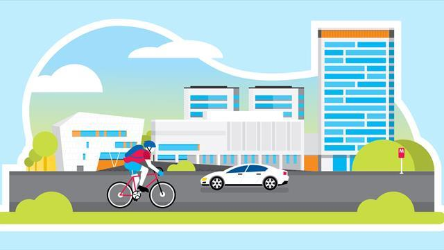

The Espoo Story is Espoo's strategy. It guides the city's operations better and more clearly in accordance with common goals.  The city's budget and financial plan are derived from the Espoo Story. The sectors and units derive their own stories and goals from the Espoo Story and common objectives of the council term. The Story is implemented in our everyday work. The vision of the City of Espoo Espoo is a network city comprising five city centres. The City of Espoo is a responsible and humane pioneer. Espoo is a good place for everybody to live, learn and work and be an entrepreneur. In Espoo, residents can truly have an influence. The values and modus operandi of the City of Espoo